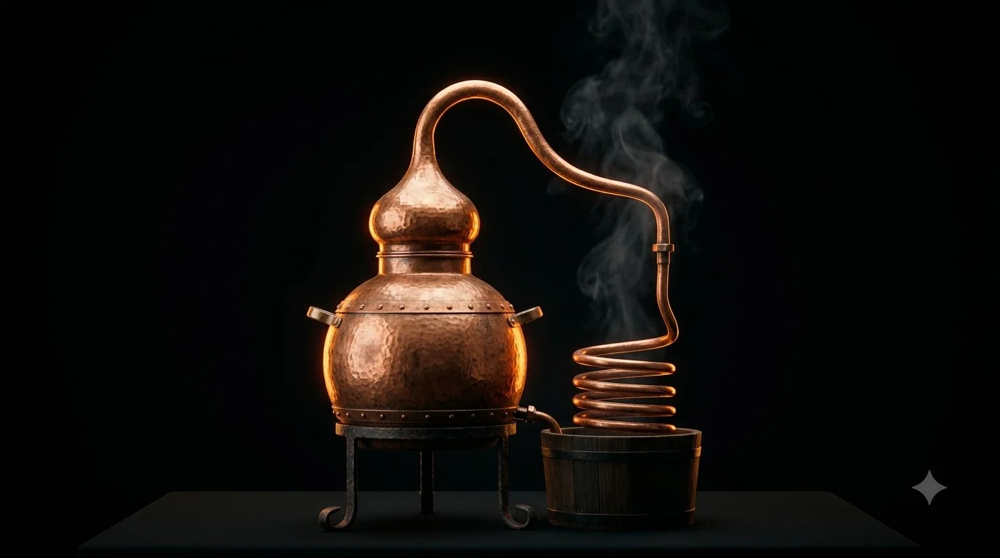
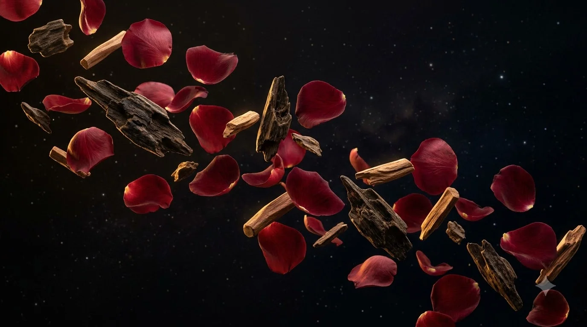
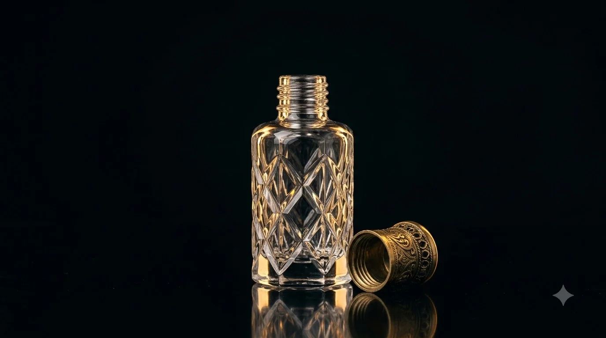
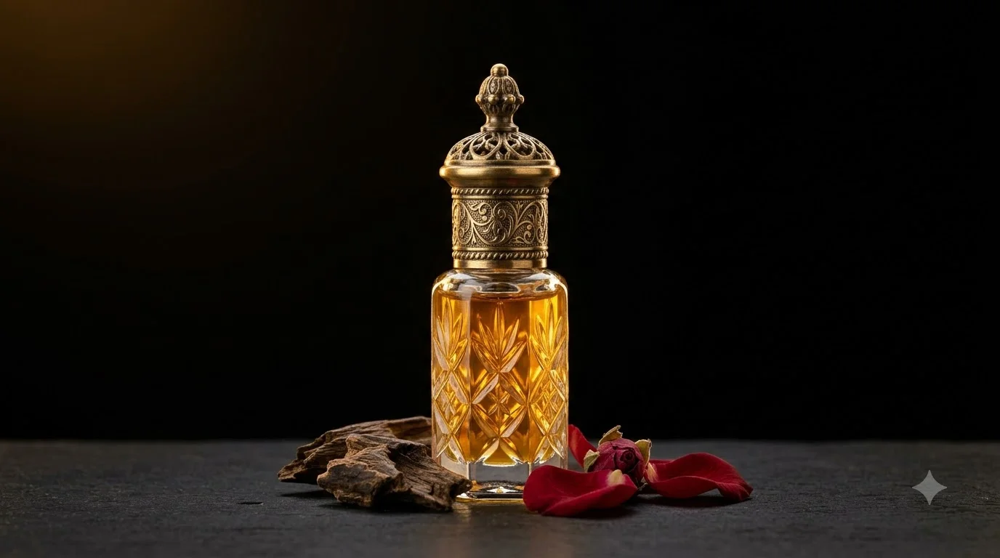

Attar is a natural perfume oil, made the old way: no alcohol, no shortcuts.
Fresh Damask rose petals picked before sunrise before fragile aroma oils evaporate, paired with aged Assam agarwood chips and rare Mysore sandalwood.
Botanicals simmer in water inside sealed wood-fired copper vessels (degs). Fragrant steam rises through the curved bamboo chonga pipe.
Steam cools inside receiving vessels submerged in cold water tanks, naturally separating into floral hydrosol and essential oil, collected drop by drop.
The fresh distillate rests for a full year in leather and glass vessels so volatile top notes harmonize into deep, enduring base accords.
100% concentrated botanical oil with no water or synthetic fixatives. A single dab to the pulse points lasts on the skin for over 24 hours.
Attar reacts with your individual body temperature, evolving slowly throughout the day rather than evaporating into the room.
The Manifesto
In an industry dominated by synthetic aerosols and 80% alcohol dilution, OUDH & ROSE preserves the ancient art of genuine attar: pure botanical hydro-distillation that honors the seasons, the wood, and the flame.
The Process Explained
Every flacon requires weeks of artisan labor and months of quiet cellar aging. Here is the complete journey from wild botanicals to the pure scented oil on your skin.
Damask rose petals (Rosa Damascena) are harvested strictly by hand between 4:00 AM and 6:00 AM before the sun's heat evaporates the fragile monoterpene essential oils.
Petals and wild Assam oud wood chips are loaded into heavy copper cauldrons (Degs) with pure spring water. The lid is sealed hermetically using a traditional paste of clay, mud, and cotton fiber.
A gentle wood fire slowly heats the deg. Fragrant steam carrying botanical aromatic molecules travels upward through a curved, hand-wrapped bamboo pipe (Chonga) into subterranean receiver vessels.
The copper receiver vessel (Bhapka) rests submerged in a tank of circulating cold spring water. As the hot botanical steam enters the cooled copper, it instantly condenses into liquid droplets.
Because aromatic botanical oil is lighter than water, pure attar naturally rises to the surface. The master distiller separates the essential oil from the floral hydrosol drop by drop by hand.
Fresh distillate is transferred into traditional porous camel-skin bottles (Kuppi) and optical glass demijohns. Micro-porosity allows residual water to breathe out while the scent rounds out into deep, velvety complexity.
Scent Architecture
Unlike alcohol perfumes that evaporate quickly, natural attar unfolds in distinct molecular tiers over 24 hours on your skin.
Luminous, dewy floral opening with delicate crisp green undertones that bloom instantly upon contact with skin.
Rich, resinous core where deep aged agarwood melds with warm velvet rose and balsamic amber tears.
A warm, intimate skin-scent that lingers through friction and body temperature, lasting into the next morning.
Why Pure Oil?
Understanding the fundamental chemical and sensory differences between concentrated oil and alcohol aerosols.
| Attribute | OUDH & ROSE Natural Attar | Commercial Eau de Parfum |
|---|---|---|
| Formulation Base | 100% Pure Sandalwood & Botanical Oil | 80%–90% Denatured Alcohol & Distilled Water |
| Skin Interaction | Warmed by skin friction; adapts to body chemistry | Rapid chemical evaporation; volatile top notes dissipate |
| Skin Longevity | 24+ Hours (Deep botanical fixative) | 2 to 4 Hours (Requires repeated resprays) |
| Sillage & Presence | Intimate personal aura (Whispers close to skin) | Aerosol cloud that overwhelms the room then fades |
| Aging Quality | Improves & deepens over years like vintage wine | Degrades & oxidizes within 12–24 months |
The Craft — 01
Why copper? Copper distributes thermal energy evenly and gently across the entire cauldron, preventing the delicate rose petals from scorching. It chemically neutralizes sulfur compounds, resulting in an unclouded, luminous floral vapor.

The Craft — 02
Commercial perfumes use petrochemical alcohol that shocks the olfactory senses and dissipates rapidly. We distill our rose essence directly over pure aged Mysore sandalwood and Assam agarwood resin, creating a living, skin-warmed fixative that endures for 24+ hours.

Technical Specifications
| Botanical Classification | Rosa Damascena & Aquilaria Agallocha |
| Extraction Method | Traditional Hydro-Distillation (Deg & Bhapka) |
| Fixative Base | 100% Pure Santalum Album (Mysore Sandalwood) |
| Solvent & Alcohol Content | 0.00% (Undiluted Extrait d'Attar) |
| Aging Protocol | 12 Months in Traditional Leather & Optical Glass |
| Application Ritual | Glass Dauber dabbed on Pulse Points (Friction-Activated) |
| Flacon Capacity | 3ml / 6ml / 12ml Hand-Cut Optical Crystal |
| Shelf Life | Indefinite (Aromas deepen and improve with decanting age) |
"Spray perfume announces itself to the whole room and vanishes in two hours. A true attar stays close to your skin and whispers all night."— House Master Distiller
Visual Archive
A behind-the-scenes look at the stills, the botanicals, and the hand-crafted vessels of the Oudh & Rose atelier.


Small-Batch Harvest
Distilled from the 2026 spring harvest. Select your volume and personalize with complimentary hand-engraved crystal monogramming.